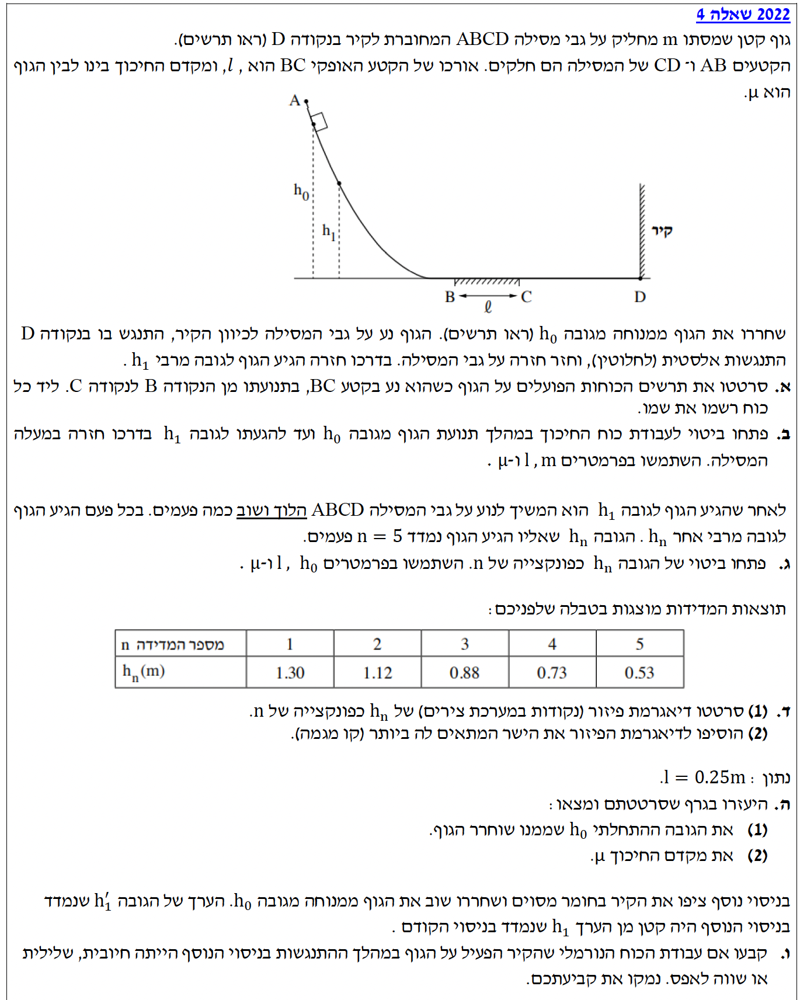
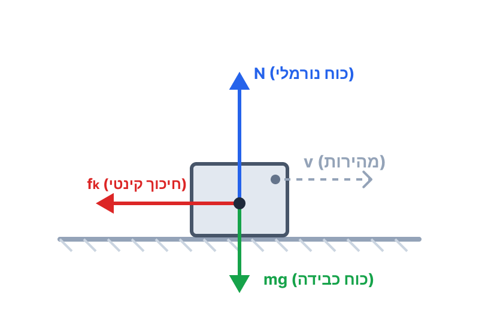

שלום לכולם! בואו נפתור יחד את שאלה 4 מתוך בגרות מכניקה 2022. זוהי שאלה קלאסית ומצוינת המשלבת דינמיקה ושיקולי עבודה ואנרגיה. אנחנו נעבוד שלב אחר שלב, בצורה מסודרת ומובנית.
עודכן:--- --:--:--

[תמונת השאלה המקורית]לא נמצאה תמונה בשם question-image.png באותה תיקייה.
סעיף א'
מה נתון: הגוף נע לאורך הקטע BC, שהוא קטע אופקי ובעל חיכוך. המסה של הגוף היא \( m \), ומקדם החיכוך הקינטי הוא \( \mu \). הגוף נמצא בתנועה ימינה (מנקודה B לנקודה C).
מה מחפשים: לסרטט תרשים כוחות (FBD) הפועלים על הגוף בעת תנועתו בקטע BC ולרשום את שמו של כל כוח.
נוסחאות ועקרונות בשימוש: נשתמש בעקרונות בסיסיים של דינמיקה - זיהוי כוחות המגע וכוחות השדה הפועלים על הגוף. \(W = mg\) כוח הכבידה. \(N\) כוח נורמלי ממשטח המגע. \(f_k\) כוח חיכוך קינטי המתנגד לכיוון התנועה.
הצבה ופתרון:
הגוף נע ימינה על משטח אופקי. הכוחות הפועלים עליו בציר האנכי הם כוח הכבידה כלפי מטה והכוח הנורמלי כלפי מעלה. בציר האופקי פועל רק כוח החיכוך הקינטי, שכיוונו מנוגד לכיוון התנועה, כלומר שמאלה.

תרשים הכוחות כולל 3 כוחות: כוח כבידה \( mg \) כלפי מטה, כוח נורמלי \( N \) כלפי מעלה, וכוח חיכוך קינטי \( f_k \) שמאלה.
טיפ מורה:
שימו לב! כאשר מבקשים מכם לרשום את שם הכוח, חובה לכתוב במפורש במילים (למשל: "כוח נורמלי") ולא רק את האות (\( N \)). בנוסף, זכרו שכוח החיכוך הקינטי תמיד מתנגד לכיוון התנועה של הגוף ביחס למשטח.
סעיף ב'
מה נתון: הגוף יורד מגובה \( h_0 \), עובר את הקטע המחוספס שאורכו \( l \), מתנגש בקיר באופן אלסטי (כלומר אין איבוד אנרגיה בהתנגשות עצמה), חוזר את הקטע המחוספס שוב (מרחק \( l \) נוסף), ועולה לגובה \( h_1 \). מקדם החיכוך הוא \( \mu \).
מה מחפשים: לפתח ביטוי לעבודת כוח החיכוך במהלך כל תנועת הגוף, מ-\( h_0 \) ועד \( h_1 \), באמצעות הפרמטרים \( m, l, \mu \).
נוסחאות ועקרונות בשימוש: \(W = F_x \Delta x = F \cos\theta \Delta s\) (נוסחת העבודה) \(f_k = \mu_k N\) (נוסחת כוח חיכוך קינטי) \(\Sigma F_y = 0\) (החוק הראשון של ניוטון בציר האנכי, כי אין תאוצה בציר זה).
הצבה ופתרון:
תחילה, נמצא את גודל כוח החיכוך על ידי כתיבת משוואת כוחות בציר ה-\( y \) (נקבע ציר \( y \) חיובי כלפי מעלה, ולכן התאוצה בציר זה היא 0):
\[ \Sigma F_y = N - mg = 0 \implies N = mg \]
נציב בנוסחת החיכוך:
\[ f_k = \mu N = \mu m g \]
כוח החיכוך פועל רק בקטע BC. הגוף עובר את הקטע הזה הלוך ושוב, כלומר המרחק הכולל שעליו פועל החיכוך הוא \( \Delta s = 2l \).
בכל רגע נתון, כוח החיכוך מנוגד לכיוון ההעתק של הגוף באותו רגע, ולכן הזווית בין וקטור הכוח לווקטור ההעתק היא תמיד \( 180^\circ \). נציב בנוסחת העבודה:
טיפ מורה:
כוח חיכוך הוא "כוח לא משמר". העבודה שלו תלויה בדרך שעובר הגוף ולא רק בנקודת ההתחלה והסיום. מכיוון שהוא תמיד מתנגד לתנועה, העבודה שלו תמיד תהיה שלילית ותגרום להקטנת האנרגיה המכנית של המערכת.
סעיף ג'
מה נתון: הגוף ממשיך לנוע הלוך ושוב. נתון כי \( h_n \) הוא הגובה שאליו מגיע הגוף לאחר שמדדו את הגובה \( n \) פעמים. מדידה 1 היתה ב-\( h_1 \) (אחרי מעבר הלוך ושוב אחד). מכאן ש-\( n \) מייצג את מספר הפעמים שהגוף השלים מחזור של "הלוך-חזור" על המשטח המחוספס. בכל מחזור כזה, הגוף עובר מרחק של \( 2l \) על הקטע המחוספס.
מה מחפשים: ביטוי של הגובה \( h_n \) כפונקציה של \( n \), באמצעות הפרמטרים \( h_0, l, \mu \).
נוסחאות ועקרונות בשימוש: משפט עבודה ואנרגיה: עבודת הכוחות הלא משמרים שווה לשינוי באנרגיה המכנית. \(W_{nc} = \Delta E = E_f - E_i\) אנרגיה פוטנציאלית כובדית:\(U_G = mgh\)
הצבה ופתרון:
נקבע את מישור הייחוס לאנרגיה פוטנציאלית כובדית (\( h=0 \)) בגובה המסילה האופקית BC.
האנרגיה ההתחלתית של הגוף במנוחה בגובה \( h_0 \) היא:
\[ E_0 = mgh_0 \]
האנרגיה המכנית לאחר \( n \) פעמים של הלוך ושוב (כאשר הוא מגיע לשיא הגובה ונעצר רגעית) היא:
\[ E_n = mgh_n \]
העבודה של כוח החיכוך במהלך \( n \) מחזורי "הלוך-חזור". בכל מחזור הוא עובר מרחק \( 2l \), לכן המרחק הכולל הוא \( 2nl \).
\[ W_f = -f_k \cdot (2nl) = -\mu m g \cdot 2nl \]
נפעיל את משפט עבודה-אנרגיה מהמצב ההתחלתי ועד למצב שלאחר \( n \) מחזורים:
\[ E_n - E_0 = W_f \]
\[ mgh_n - mgh_0 = -2\mu m g l n \]
נחלק את שני אגפי המשוואה ב-\( mg \) (מותר כי מסת הגוף אינה אפס ותאוצת הכובד \( g \) אינה אפס):
\[ h_n - h_0 = -2\mu l n \]
נעביר את \( h_0 \) אגף כדי לבודד את \( h_n \):
\( h_n = h_0 - 2\mu l \cdot n \)
טיפ מורה:
הביטו בתוצאה שקיבלנו! היא נראית כמו משוואת ישר מהצורה \( y = mx + b \), כאשר \( y \) הוא \( h_n \), ה-\( x \) שלנו הוא \( n \), נקודת החיתוך עם הציר האנכי (\( b \)) היא \( h_0 \), והשיפוע של הישר (\( m \)) הוא הקבוע השלילי \( -2\mu l \). הבנה זו תעזור לנו מאוד בסעיף הבא!
סעיף ד'
מה נתון: טבלת מדידות המקשרת בין \( n \) (מספר המדידה) לבין \( h_n \) (הגובה במטרים).
מה מחפשים: (1) לסרטט דיאגרמת פיזור (נקודות) של \( h_n \) כפונקציה של \( n \). (2) להוסיף קו מגמה (הישר המתאים ביותר).
עקרונות בשימוש: עקרונות בניית גרף בפיזיקה: כותרות צירים, יחידות מידה, פיזור אחיד של שנתות, העברת "קו המגמה" הטוב ביותר בין הנקודות כך שישקף את המגמה הליניארית שגילינו בסעיף הקודם.
הצבה ופתרון:
נסרטט מערכת צירים. ציר אופקי (\( x \)) יהיה \( n \) (ללא יחידות), וציר אנכי (\( y \)) יהיה \( h_n \) ביחידות של מטרים (m).
הנקודות הן: (1, 1.30), (2, 1.12), (3, 0.88), (4, 0.73), (5, 0.53).
הגרף שורטט בהצלחה עם נקודות הנתונים (בכחול) וקו המגמה הליניארי (באדום מקווקו) העובר ביניהן.
טיפ מורה:
בבחינת הבגרות, אל תחברו את הנקודות ב"זיגזג"! קו מגמה נועד לייצג את החוקיות הפיזיקלית שמצאנו בסעיף ג' (שהיא משוואת ישר). הקו צריך לעבור קרוב ככל האפשר לכל הנקודות, כשיש איזון בין הנקודות שמעליו לאלו שמתחתיו.
סעיף ה'
מה נתון: אורך קטע החיכוך הוא \( l = 0.25\text{ m} \). עלינו להיעזר בגרף ששרטטנו.
מה מחפשים: (1) את הגובה ההתחלתי \( h_0 \). (2) את מקדם החיכוך \( \mu \).
נוסחאות ועקרונות בשימוש: השוואת משוואת הישר הפיזיקלית למשוואת הישר המתמטית. מהנוסחה שפיתחנו בסעיף ג': \( h_n = (-2\mu l) \cdot n + h_0 \) \( y = m_{slope} \cdot x + b \)
מכאן נסיק שתי מסקנות:
1. נקודת החיתוך עם הציר האנכי (\( b \)) שווה ל-\( h_0 \).
2. שיפוע הגרף (\( m_{slope} \)) שווה ל- \( -2\mu l \).
הצבה ופתרון:
נחשב תחילה את שיפוע הגרף בעזרת שתי נקודות שיושבות ממש על קו המגמה שסרטטנו. במקרה זה, נקודות הקצה מהטבלה עבור \( n=1 \) ועבור \( n=5 \) יושבות בדיוק על הקו המייצג, והן רחוקות מספיק זו מזו כדי להקטין שגיאות קריאה. לכן נוח להשתמש בערכיהן: \( (1, 1.30) \) ו-\( (5, 0.53) \):
טיפ מורה:
ככלל בחישוב שיפוע מגרף, חובה לקחת נקודות שנמצאות על קו המגמה שסרטטתם, ולא באופן עיוור את נקודות המדידה מהטבלה (כי הניסוי מכיל שגיאות והנקודות לעיתים קרובות סוטות מהקו). בנוסף, מומלץ תמיד לבחור שתי נקודות שרחוקות ככל האפשר זו מזו, כדי למזער את חוסר הדיוק שבקריאת הנתונים מהגרף. כאן התמזל מזלנו ושתי נקודות הקיצון מהטבלה נמצאות בול על הקו!
סעיף ו'
מה נתון: בניסוי נוסף ציפו את הקיר בחומר מסוים. שחררו שוב מגובה \( h_0 \). כעת נמדד גובה חזרה \( h'_1 \), ונמצא כי הוא קטן מהערך \( h_1 \) שנמדד בניסוי המקורי.
מה מחפשים: לקבוע האם עבודת הכוח הנורמלי שהקיר מפעיל על הגוף במהלך ההתנגשות בניסוי הנוסף הייתה חיובית, שלילית, או שווה לאפס. ולנמק.
נוסחאות ועקרונות בשימוש: משפט עבודה ואנרגיה:\(W_{nc} = \Delta E\) הפעם קיימים שני כוחות לא משמרים שעושים עבודה: כוח החיכוך, והכוח הנורמלי של הקיר במהלך ההתנגשות בחומר המצפה אותו.
הצבה ופתרון:
נשווה בין שני הניסויים על סמך משפט עבודה-אנרגיה.
בניסוי הראשון (התנגשות אלסטית ללא ציפוי):
\[ E_1 - E_0 = W_f \]
בניסוי השני (עם ציפוי הקיר):
\[ E'_1 - E_0 = W_f + W_{wall} \]
הגוף יורד מאותו גובה \( h_0 \), ולכן האנרגיה ההתחלתית \( E_0 \) זהה בשני המקרים. הגוף עובר את אותו מרחק בדיוק על הקטע המחוספס (הלוך ושוב מקצה לקצה), ולכן עבודת כוח החיכוך \( W_f \) זהה בשני המקרים.
נתון לנו ש-\( h'_1 < h_1 \). מכיוון ש-\( E = mgh \), נובע מכך ש-\( E'_1 < E_1 \).
כלומר, בניסוי השני, האנרגיה המכנית הסופית קטנה יותר. לאן "נעלמה" אנרגיה נוספת זו? היא אבדה עקב עבודת הכוח הנורמלי של הקיר המצופה במהלך ההתנגשות (שכעת אינה אלסטית).
מתמטית:
עבודת הכוח הנורמלי שהקיר מפעיל על הגוף היא שלילית.
טיפ מורה:
הסבר נוסף ופיזיקלי אינטואיטיבי יותר: כשהגוף פוגע בחומר המצפה את הקיר, הוא מועך (מכווץ) אותו. בשלב זה הכוח הנורמלי מהקיר מנוגד לכיוון ההתקדמות של הגוף (לתוך הקיר) ולכן עושה עבודה שלילית. כשהחומר מתרחב חזרה ודוחף את הגוף, הכוח פועל בכיוון התנועה (עבודה חיובית). מכיוון שההתנגשות אינה אלסטית (אבדה אנרגיה למערכת, כפי שמראה הגובה הנמוך יותר), העבודה השלילית בכיבוש החומר גדולה בערכה המוחלט מהעבודה החיובית בהחזרתו, וסך הכל מתקבלת עבודה שלילית.
נוסח השאלה המקורית
[תמונת השאלה המקורית]לא נמצאה תמונה בשם question-image.png.